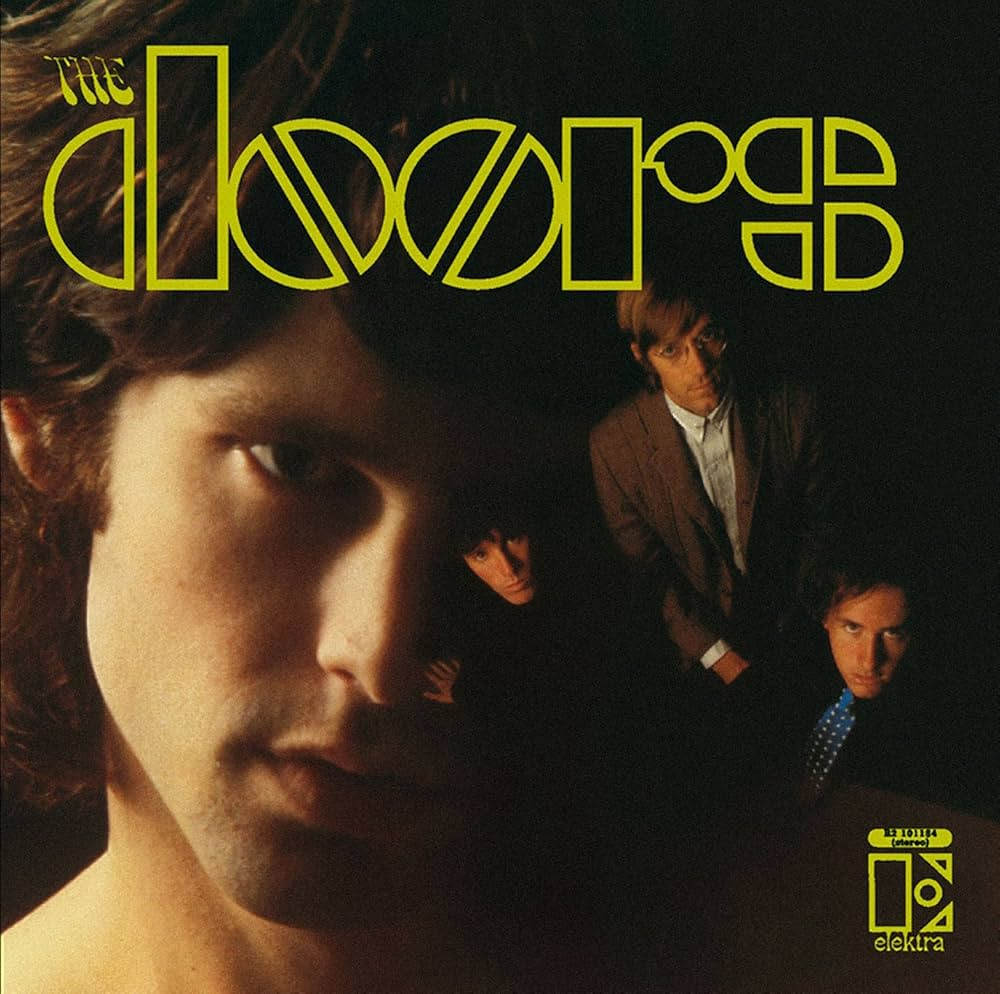
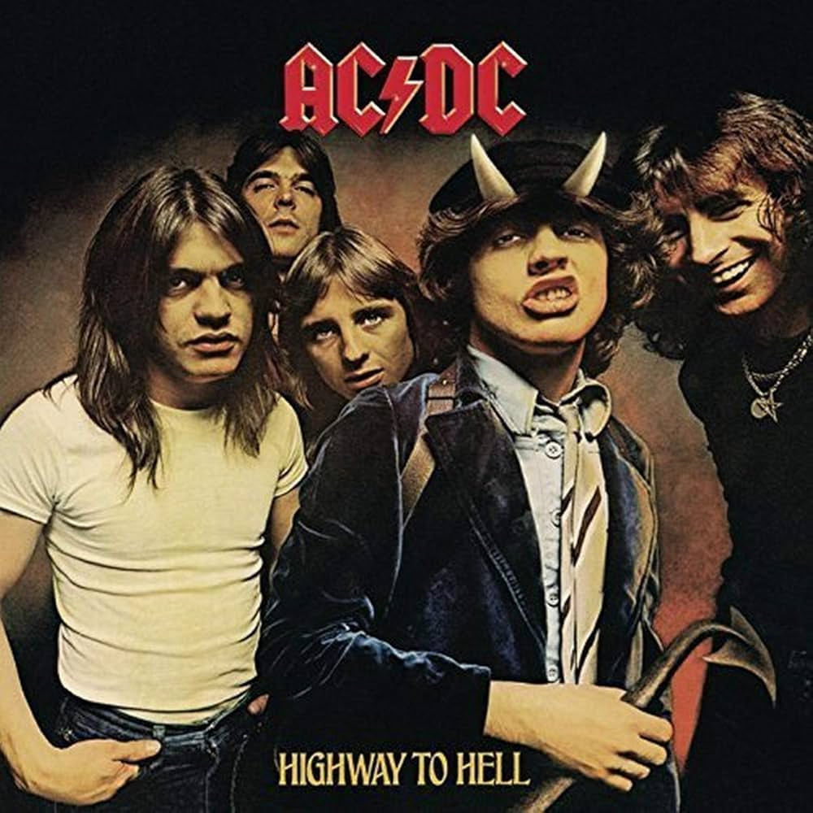

RESENHA DOS ALBUNS QUE MUDARAM A HISTÓRIA DO ROCK

Sgt. Pepper's Lonely Hearts Club Band* é amplamente considerado um dos álbuns mais influentes e inovadores da história da música. Lançado em 1967, o álbum marca uma virada artística para os Beatles, tanto em termos de sonoridade quanto de conceito. O álbum é um dos primeiros a ser considerado uma "obra de arte completa", onde as músicas se entrelaçam tematicamente e não são apenas uma coleção de singles.
O álbum de estreia homônimo do The Doors é um dos mais influentes do rock psicodélico e do rock clássico. Lançado em 1967, ele traz uma combinação única de rock, blues e psicodelia, impulsionada pela voz marcante de Jim Morrison e pelo teclado icônico de Ray Manzarek. Faixas como "Break on Through (To the Other Side)", "Light My Fire" e "The End" se tornaram clássicos instantâneos. O álbum é conhecido por seu clima sombrio e letras introspectivas, que exploram temas de morte, sexo e o lado obscuro da mente humana.
Highway to Hell é um dos álbuns mais emblemáticos do AC/DC, marcado por sua energia crua e riffs poderosos. Este foi o último álbum com o vocalista Bon Scott antes de sua morte em 1980. A faixa-título, "Highway to Hell", se tornou um dos maiores hinos do rock, conhecida por seu riff de guitarra inconfundível e refrão contagiante. O álbum reflete o auge do AC/DC na cena do hard rock, com sua mistura inabalável de rock'n'roll direto e letras irreverentes. Highway to Hell consolidou o AC/DC como uma das maiores bandas de rock do mundo, preparando o terreno para seu sucesso posterior.